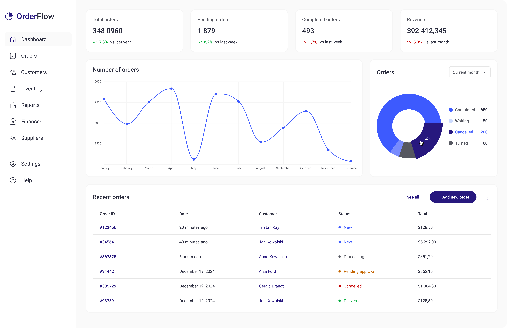
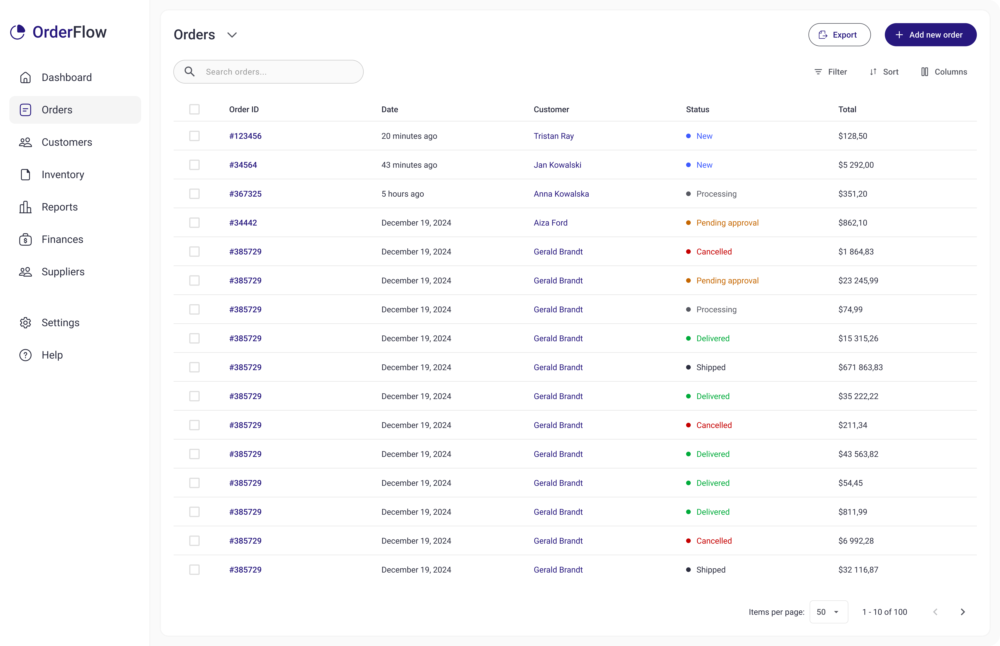
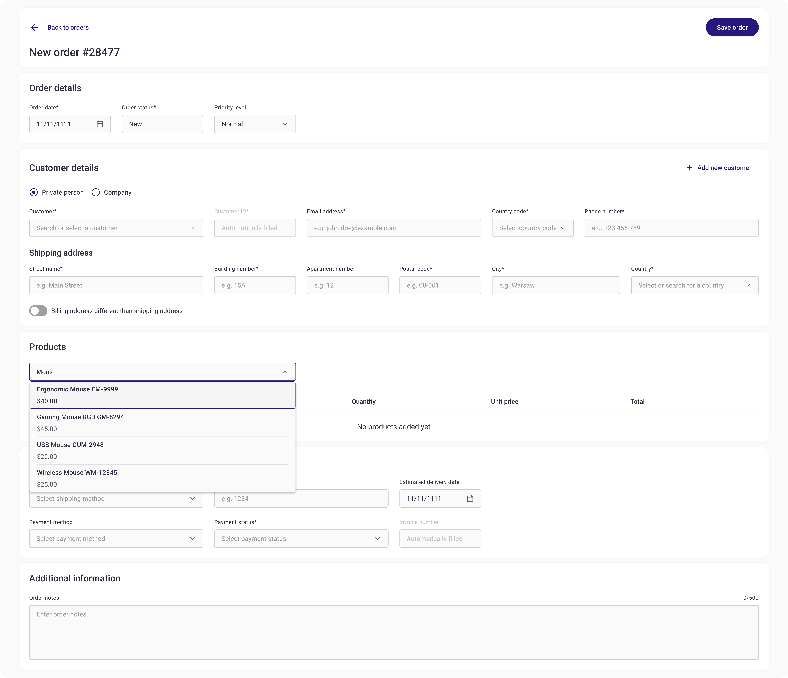
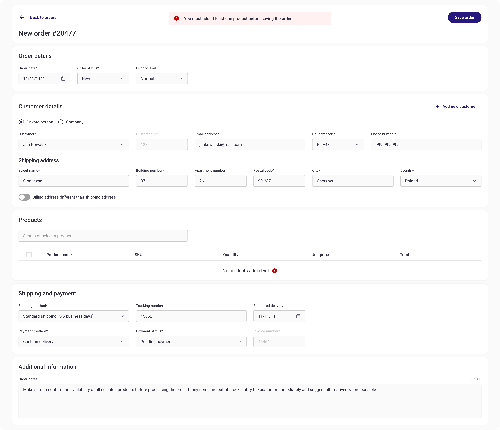

Overview
OrderFlow is an internal order management tool designed to support operational teams responsible for processing, tracking,
and updating customer orders.
The project focused on reducing manual work, minimizing errors, and improving visibility across the order lifecycle by simplifying complex workflows and decision-heavy screens.
My role
Product Designer (end-to-end)
Research, UX, UI, product strategy & decision-making
Problem statement and possible solution
Problem
Operational teams responsible for order processing often work across multiple tools and spreadsheets,
making it difficult to track order status, identify bottlenecks, and respond quickly to changes.
As a result, users lack confidence in the accuracy of order data, spend significant time verifying information manually,
and struggle to maintain control over high order volumes.
Solution
OrderFlow was designed as a centralized internal tool that simplifies the core order flow by providing clear status visibility,
structured order views, and consistent interaction patterns.
The solution prioritizes reducing manual verification, supporting faster decision-making, and enabling users to confidently
manage orders at scale.
Research insights
Desk research helped identify common patterns and pain points in existing order management tools and processes. The following insights directly informed the design of OrderFlow:
- Order management tools often try to cover too many use cases, resulting in complex and overloaded interfaces.
OrderFlow focuses on simplifying the core order flow instead of supporting every edge case. - Lack of real-time status visibility forces users to manually verify order information across multiple systems.
Clear order status and progression became a primary design focus. - Inventory-related errors frequently stem from delayed or unclear updates rather than missing data.
The interface prioritizes clarity and confirmation over raw data density. - Users value predictability and consistency more than advanced analytics in day-to-day order processing.
Basic insights are surfaced contextually instead of relying on separate reporting dashboards.
Competitive landscape & positioning
A review of existing order management tools revealed recurring patterns in how complexity, flexibility, and usability are balanced across the market.
Key observations
- Highly configurable systems prioritize flexibility at the cost of usability, resulting in complex and overloaded interfaces.
- Enterprise-level tools focus on reporting and analytics, but often overwhelm users performing day-to-day operational tasks.
- Legacy systems struggle with clarity, consistency, and feedback, increasing cognitive load and error risk.
Design decisions informed by the analysis
- OrderFlow intentionally limits configurability in favor of clarity for core order-processing workflows.
- The interface prioritizes status visibility and actionable information over dense dashboards and advanced reporting.
- Navigation and interactions follow predictable patterns to reduce training time and user error.
- Visual feedback was treated as a core requirement to maintain user confidence during order updates.
Primary user context
Based on the conclusions drawn from the conducted research, I created a user persona to represent one of the key user groups for the Orders Management System application.
Design implications
Paweł’s needs directly informed design decisions around status visibility, feedback, and prioritization within the order flow.
Information architecture overview
This information architecture overview illustrates how the core order flow fits within the broader system structure.
The project focused primarily on the Orders section, while other areas are shown for context and future scalability.
Core order flow
This diagram illustrates the primary order management flow, focusing on how users review, prioritize, and act on orders.
Only the core order-related paths are shown to highlight key decision points and system feedback.

Lo-fi wireframes (core order flow)
These low-fidelity wireframes were created to validate the core order management flow before moving into visual design. At this stage, the focus was on information hierarchy, clarity of order status, and the ease of updating orders, rather than visual polish.
The wireframes allowed me to quickly test whether users could:
- identify orders requiring attention,
- understand order details at a glance,
- confidently update order status without unnecessary friction.

Validation considerations
Due to the conceptual nature of this project, formal usability testing was not conducted.
Design decisions were primarily informed by:
- desk research,
- competitive analysis,
- and established UX patterns for internal order management systems.
If this project were to move into development, the next step would be lightweight usability testing focused on order prioritization and status updates.
Style guide
The style guide was created to establish a clear and consistent visual foundation for the OrderFlow system. The focus was not on building a full design system, but on defining core visual principles that support data-heavy views, frequent status updates, and efficient daily use by internal users. Typography, color usage, and visual hierarchy were designed to prioritize readability, clarity, and fast information scanning in an operational B2B context.

Final design
Dashboard
Order list
Order options

New order form

Product Search and selection
To add a product to the order list, the user must first search for it among the products already stored in the system. The search functionality supports both product name and SKU code as input criteria, ensuring flexibility and efficiency in locating the desired item. Once the user begins typing, the system displays a dropdown list of matching results, allowing for quick selection without the need to browse through the entire product catalog.
Adding a product
After selecting a product from the autocomplete list, a new editable row appears in the product list. This row is displayed in edit mode, allowing the user to enter the desired quantity before confirming the addition. The quantity field is pre-filled with the default value of 1, but it can be manually adjusted. This approach ensures that each product is intentionally added with the correct amount, reducing the risk of errors and improving the overall order accuracy.

Form validation
The new order form includes validation logic that is triggered when the user clicks the “Save order” button. This ensures that all required fields are properly completed before the form can be submitted. One of the key validation rules checks whether at least one product has been added to the order. If the user attempts to save the form without adding any products, an error message is displayed at the top of the screen in the form of a snackbar, and a red warning indicator appears next to the “No products added yet” message within the Products section. This solution provides immediate and contextual feedback, guiding the user to resolve the issue efficiently.
Conclusions
This project demonstrates my approach to designing complex internal tools, where clarity, accuracy, and efficiency are more important than visual experimentation.
Through desk research, competitive analysis, and pattern validation, I designed an Orders Management System focused on supporting day-to-day operational work, reducing cognitive load, and minimizing errors in high-frequency workflows.
The strongest outcomes of this project are the clearly structured order flow, contextual actions, and inline editing patterns that allow users to manage orders
efficiently without breaking their focus. Particular attention was given to error prevention, status visibility, and immediate feedback — critical factors in operational B2B environments.
If this project were to move into development, the next step would be usability testing focused on order prioritization, bulk actions, and error handling in edge cases. Insights from these tests would inform further refinement of interaction patterns and system scalability.